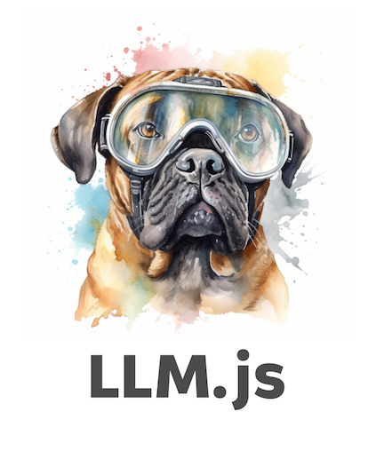

LLM.js is the simplest way to interact
with Large Language Models. It works with local models like llamafile and
remote models like gpt-4 and
Claude.
await LLM("the color of the sky is"); // blueFeatures
Easy to use
Same interface for all services (llamafile,
openai, anthropic,
modeldeployer)
Chat History
JSON Schema
Streaming
llm CLI to use in your
shell
Host a remote API, track costs, rate limit users, manage API keys with Model Deployer
MIT license
For local models, ensure a llamafile instance is running. For remote
models, make sure you have OPENAI_API_KEY or
ANTHROPIC_API_KEY set in your environment variables.
npm install @themaximalist/llm.js
export OPENAI_API_KEY=...The simplest way to call LLM.js is directly as an
async function, using a string as a
parameter.
const LLM = require("@themaximalist/llm.js");
await LLM("hello"); // Response: hiStoring history is as simple as initializing with
new LLM(). Call send() to send the current
state for completion, and chat() to update the messages and
fetch in one command. Both chats from the user and
responses from the AI assistant are stored
automatically.
const llm = new LLM("what's the color of the sky in hex value?");
await llm.send(); // Response: sky blue
await llm.chat("what about at night time?"); // Response: darker value (uses previous context to know we're asking for a color)Create agents that specialize at specific tasks using
llm.system(input). Note OpenAI has suggested system prompts
may not be as effective as user prompts
(llm.user(input)).
const llm = new LLM();
llm.system("You are a friendly chat bot.");
await llm.chat("what's the color of the sky in hex value?"); // Response: sky blue
await llm.chat("what about at night time?"); // Response: darker value (uses previous context to know we're asking for a color)Streaming is as easy as passing {stream: true} as the
second options parameter.
const stream = await LLM("the color of the sky is", { stream: true });
for await (const message of stream) {
process.stdout.write(message);
}LLM.js supports passing historical messages in as the
first parameter to await LLM() or new LLM()
— letting you continue a previous conversation, or steer the AI model in
a more precise way.
await LLM([
{ role: "user", content: "remember the secret codeword is blue" },
{ role: "user", content: "what is the secret codeword I just told you?" },
]); // Response: blueThe OpenAI message format is used, and converted on-the-fly for specific services that use a different format (like Anthropic or LLaMa).
LLM.js supports JSON schema in OpenAI and LLaMa.
const schema = {
"type": "object",
"properties": {
"colors": { "type": "array", "items": { "type": "string" } }
}
}
const obj = await LLM("what are the 3 primary colors in JSON format?", { schema, temperature: 0.1, service: "openai" });LLaMa uses a different format internally (BNFS), but it’s
automatically converted from JSON Schema. Note JSON Schema can produce
invalid JSON, especially if the model cuts off in the middle (due to
max_tokens).
Model Deployer lets you call LLM.js through a remote API. It manages your models, api keys, and provides a central API for all of them so you can easily use LLMs in your apps.
It can rate limit users, track API costs—and it’s extremely simple:
await LLM("hello world", { service: "modeldeployer", model: "model-api-key-goes-here" });Model Deployer also lets you setup API keys with specific settings, and optionally override them on the client.
await LLM("the color of the sky is usually", { service: "modeldeployer", model: "model-api-key-goes-here", endpoint: "https://example.com/api/v1/chat", max_tokens: 1, temperature: 0 });LLM.js can be used without Model Deployer (deploy
however you’d like), but they work well together.
LLM CommandLLM.js provides a handy llm command that
can be invoked from your shell. This is an extremely convenient way to
call models and services with the full power of LLM.js.
Access it globally by installing
npm install @themaximalist/llm.js -g or setting up an
nvm environment.
> llm the color of the sky is
blueMessages are streamed back in real time.
You can also initiate a --chat to remember message
history and continue your conversation. Ctrl-C to quit.
> llm remember the codeword is blue. say ok if you understand --chat
OK, I understand.
> what is the codeword?
The codeword is blue.Model and service can be specified on the fly
> llm the color of the sky is --model claude-v2
blueLLM.js and llm use the debug
npm module with the llm.js namespace, so you can view debug
logs by setting the DEBUG environment variable.
> DEBUG=llm.js* llm the color of the sky is
# debug logs
blue
> export DEBUG=llm.js*
> llm the color of the sky is
# debug logs
blueLLM.js is currently used in the following projects:
MIT